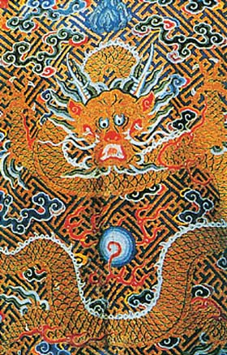
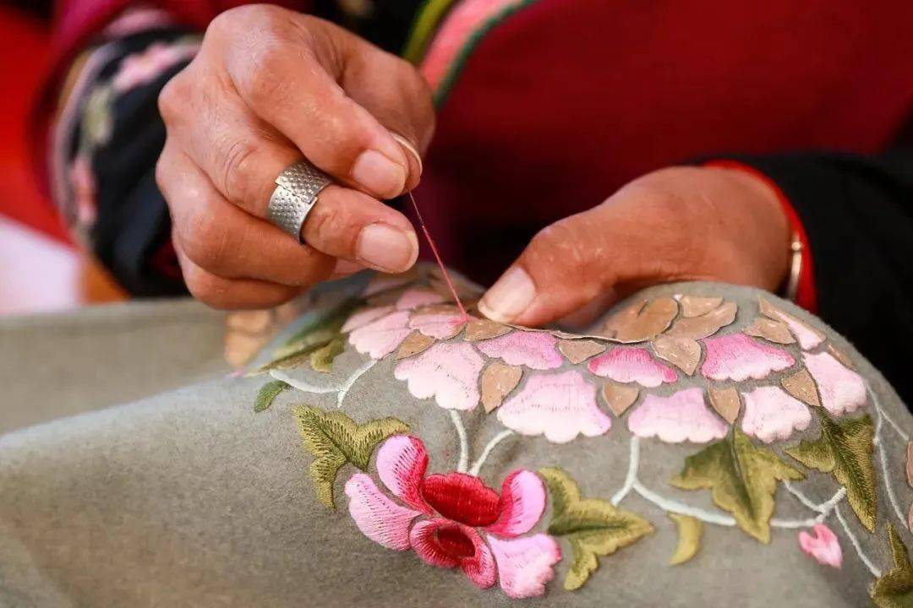

明清时期刺绣
Regong Art Muar
明清两代大量的刺绣题材是颇具中国特色的吉祥图案，即所谓的“图必有意，意必吉样”。中国的吉祥图案成百上千，不可胜数。富有吉祥图案的老绣片，带着古人祈求富贵寿喜、平安幸福的人生理想，

清代龙纹服饰(局部)。
中国的刺绣传承了数千年之后，在明清两代达到了巅峰民间的刺绣技法和所用的丝线材料都有了惊人的发展,我们现在可以看到的绣品中，有的部分是用捻过的丝线绣成的，像树干、岩石等;有的是用未捻过的丝线绣成的，一些特别精细的部位如人的脸部等处，甚至是以用丝线劈成的绒绣成的。片金是将金箔贴在极薄的羊皮上或棉纸上，再用于刺绣中;捻金是将金箔切成细条，和丝线捻在一起:金银线是镀金的铜线或银线。《红楼梦)里晴雯补裘衣使的雀金泥，是用孔雀尾羽捻成的粗线。

刺绣服饰介绍
不同人的服饰、不同场合的装饰还会有区别比如，在祝寿的日子里，绣品要用八仙祝寿万寿无疆、松鹤延年、福寿三多、福山寿海等;而婚庆时则要用鸳鸯戏水、和荷二仙、连(莲)生贵子等图饰;祝贺升迁则用指日高升、平(瓶)升(生)三级(戟): 庆祝开业大吉用年年发财、一本万利等。